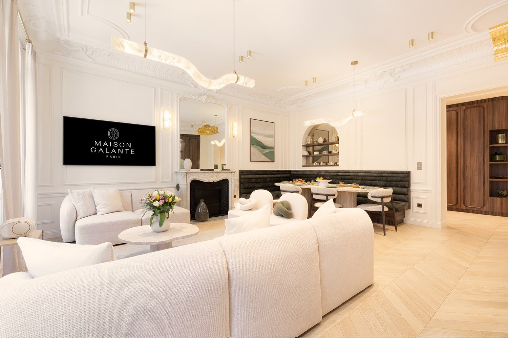
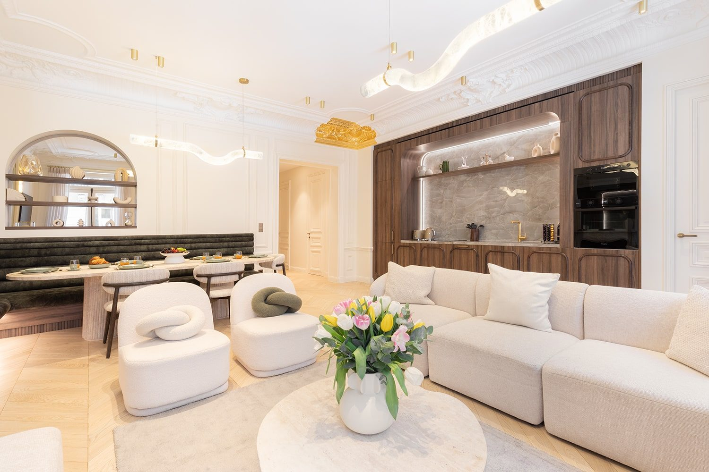
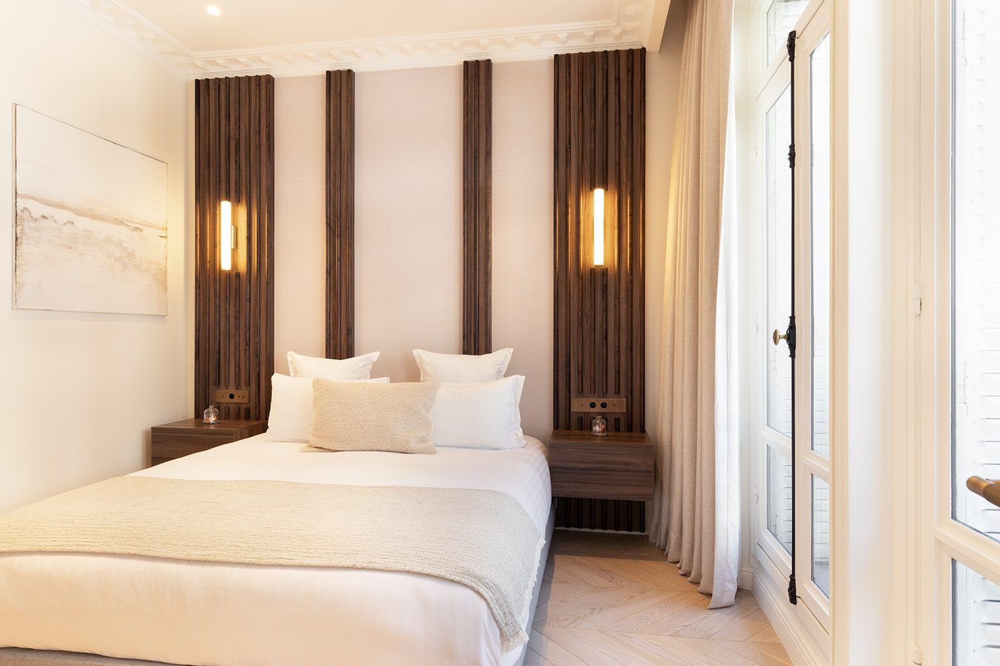
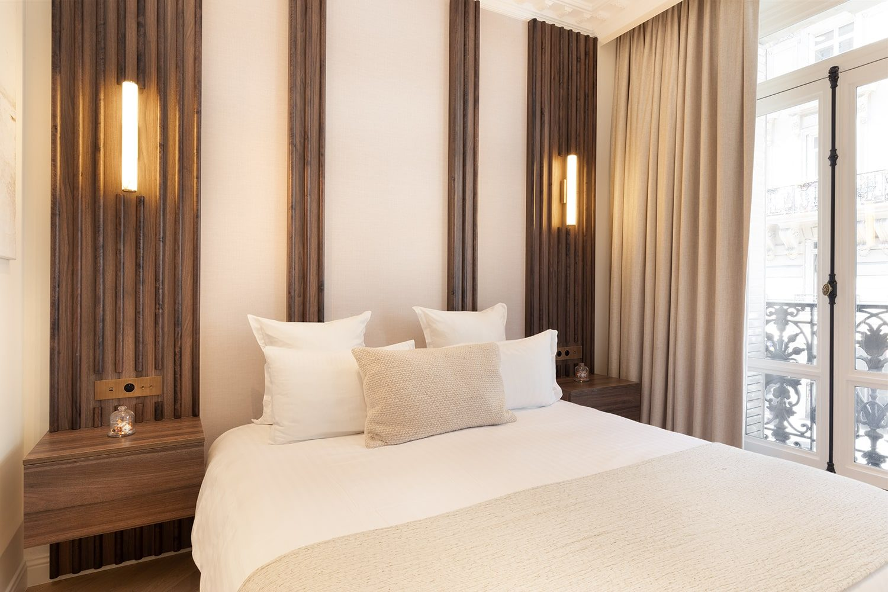
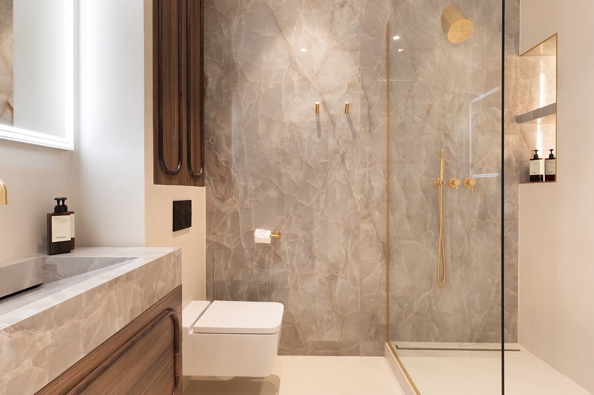
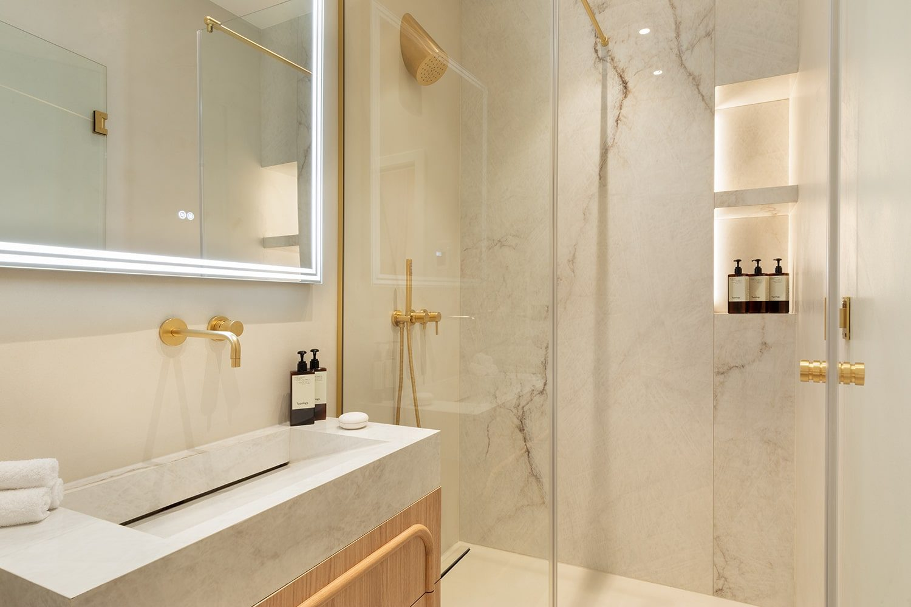

Paris 8e
Les moulures d'époque, le luminaire conçu pour cet espace seul, chaque meuble pensé pour ce mur précis. Marbeuf est un intérieur où rien n'aurait pu être différent.
Situé dans le 8e arrondissement de Paris, cet appartement haussmannien de 220 m² est le fruit d'une rénovation complète menée par John Rozenblum, designer d'intérieur à Paris. Le projet allie le patrimoine architectural du Second Empire — moulures, hauteurs de plafond, parquet point de Hongrie — à un mobilier contemporain dessiné sur mesure pour chaque espace. Chaque matière a été sélectionnée pour sa capacité à vieillir avec élégance. Une rénovation de prestige dans l'un des quartiers les plus recherchés de Paris.
La rue Marbeuf traverse le 8e arrondissement entre l'avenue des Champs-Élysées et l'avenue George-V. Les immeubles y datent du Second Empire et en ont gardé les attributs : plafonds hauts, moulures profondes, enfilades de réception. Sur 220 m², le patrimoine architectural n'était pas un décor à conserver mais une structure à faire travailler. Le projet a été conduit pour Maison Galante Paris.
Le grand séjour est traversé par un luminaire sur mesure, une ligne continue qui ondule sur toute la longueur de la pièce. Il n'existe pas ailleurs et n'aurait de sens nulle part ailleurs : son tracé suit les moulures, sa hauteur est réglée sur la corniche, sa longueur sur celle de l'enfilade. C'est la pièce qui donne au projet son échelle et qui permet à un volume de cette taille de rester habitable.
Dans un appartement haussmannien, le mobilier standard tombe toujours à côté : trop bas sous une corniche, trop court entre deux fenêtres. Ici tout a été dessiné sur mesure — banquette capitonnée du coin repas, cuisine en noyer, panneaux de noyer cannelé des chambres, appliques verticales intégrées aux boiseries. Rien n'aurait pu être différent parce que rien n'a été choisi sur catalogue.
Les salles de bains sont traitées en marbre clair et veiné, du sol au plafond, avec des vasques monoblocs, des douches à l'italienne entièrement vitrées et une robinetterie en laiton. Le noyer des chambres y entre par les meubles vasques : le passage d'une pièce à l'autre se fait sans changement de langage, ce qui donne à l'ensemble sa continuité malgré la surface.
Marbeuf rejoint les rénovations haussmanniennes conduites dans le 8e arrondissement de Paris, aux côtés de Champs Élysées et d'Arcade.
Ce projet fait partie des réalisations de design d'intérieur à Paris de John Rozenblum. Pour discuter d'un projet similaire ou d'une rénovation sur mesure, prenez contact.






Un projet ?
Chaque projet commence par une conversation. Partagez votre vision — je m'occupe du reste.
Prendre contact